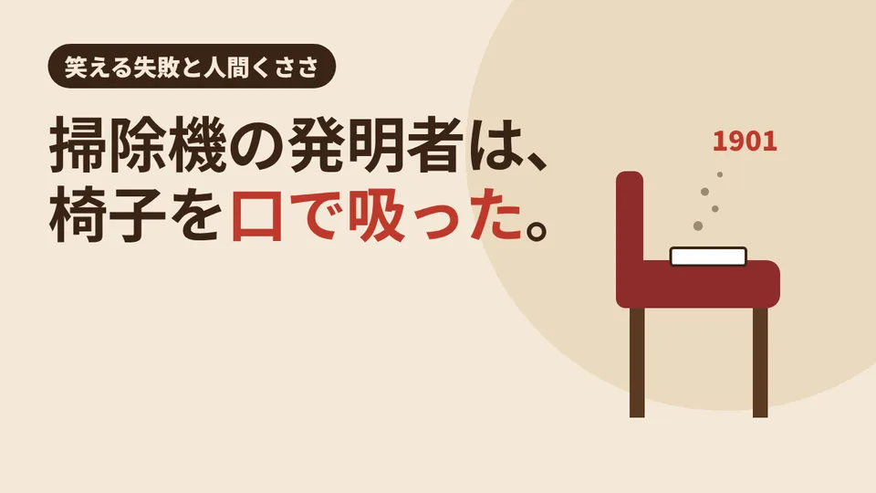

CLEAN CARE JOURNAL / 笑える失敗と人間くささ
掃除機を発明した人は、レストランの椅子を口で吸った。

ロンドンのレストランで、紳士が椅子の座面に顔を近づけ、思いきり息を吸い込む。友人たちの前で、むせながら。 1901 年のこの奇妙な場面が、今わたしたちが毎日使う「掃除機」の始まりだと言われています。
「吹き飛ばす」掃除機を見た日
主人公は、イギリスの技師ヒューバート・セシル・ブース。1901 年、彼はロンドンの劇場で、アメリカから来た「掃除の機械」の実演を見ます。鉄道の車両を掃除するための機械で、空気を吹きつけてほこりを飛ばす仕組みでした。
ところが、飛ばしたほこりは、どこにも集まりません。舞い上がって、また別の場所に落ちるだけ。ブースは実演者に「吸い取ったほうがいいのでは」と尋ねます。答えは「吸うのは試したが、うまくいかなかった」。
ハンカチ 1 枚の実験
数日後、ブースは友人とレストランで食事をしていました。そして、試してしまいます。ビロード張りの椅子の座面にハンカチを置き、その上から口をつけて、思いきり吸い込んだのです。
結果は、ハンカチの裏にほこりがくっきり。友人たちは、むせるブースを見ていたといいます。行儀としては満点とは言えませんが、「吸えば取れる」「布を通せば、ほこりだけが残る」という掃除機の原理は、この瞬間に確かめられました。ブースは同じ 1901 年に、吸引ポンプとホース、フィルターを兼ねた集じん部を持つ装置で特許を取ります。
どんでん返し:最初の掃除機は、家に入らなかった
ここからが、さらに人間くさい話です。最初の機械は、とにかく大きかった。ガソリンで動く発電機付きのポンプは馬車に積まれ、家の前に止められます。そこから長さ 82 フィート(約 25 メートル)のホースを窓から家の中へ通して、掃除をしたのです。大きくて、騒がしい機械でした。
だからブースが売ったのは、機械ではなく「掃除」でした。会社をつくり、制服の作業員が決まったルートを回る定額のサービスにしたのです。1902 年には、エドワード 7 世の戴冠式を前に、ウェストミンスター寺院の中央通路の絨毯を掃除する仕事も請けました。家庭で使える持ち運びできる型ができたのは、1906 年のことです。
結び:笑われた一口が、掃除の常識を変えた
レストランで椅子を吸う紳士。笑われても仕方のない場面です。でも、「飛ばすのではなく、取る」という一口の発見は、120 年以上たった今も、掃除のいちばん大事な考え方として残っています。
現場では
LOTUS クリーンケアサービスの清掃でも、ブースの気づきはそのまま生きています。ほこりは、はたいて飛ばすと、また別の場所に落ちます。だから、高いところから低いところへ順に進め、乾いたほこりはまず吸い取り、そのあとで拭く。入居者さんや患者さんが過ごす部屋では、ほこりをなるべく舞い上げない順番を大事にしています。そして、ブースの会社と同じように、決まった周期でうかがう定期清掃もお受けしています。作業の前後は写真でご報告します。
今日の持ち帰り
- 1901 年、ブースは「吹き飛ばす」掃除機を見て、「吸い取る」ほうがよいと考え、レストランの椅子で試した。
- 最初の掃除機は馬車で運ぶ巨大なポンプ。売ったのは機械ではなく、定額の巡回掃除だった。
- ほこりは飛ばさずに取る。高いところから低いところへ、吸ってから拭く。
クリーンケア専用ダイヤル070-3220-4946
※営業・勧誘のお電話はご遠慮ください